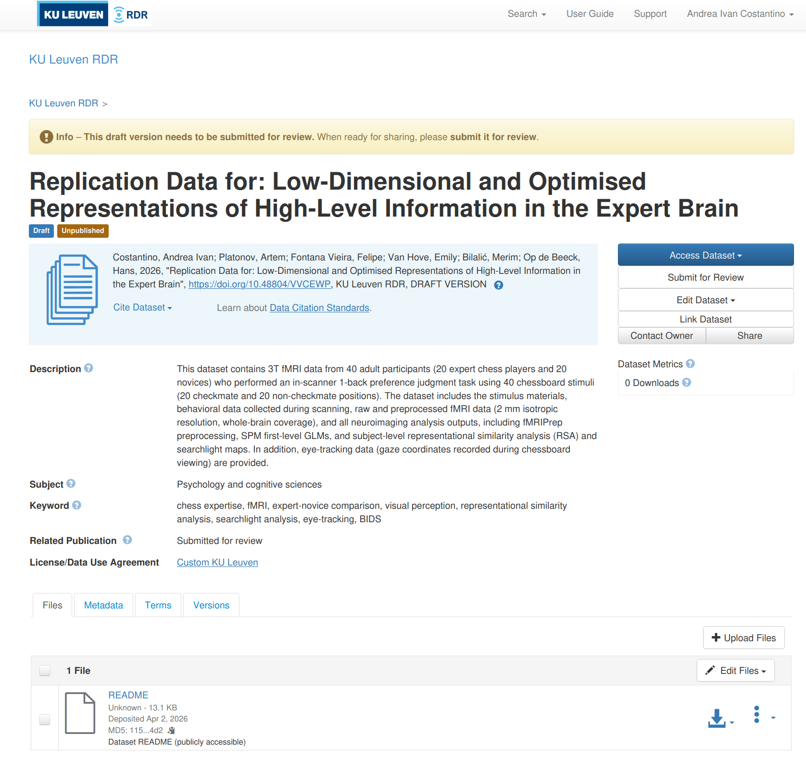
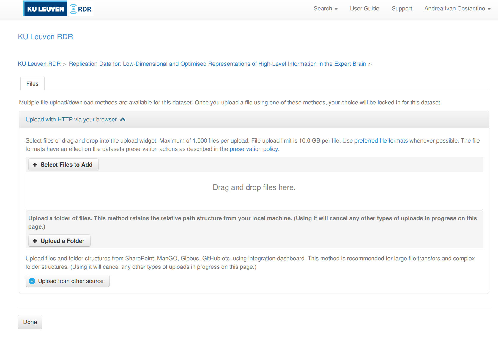

RDR for data sharing¶
KU Leuven Research Data Repository (RDR) is the university's platform for publishing and sharing research datasets alongside a publication. This page walks you through the full upload process.
When to use RDR
RDR is for finished datasets tied to a publication. For active research data, use ManGO. For long-term archiving, use FriGO.
Before you start¶
- Your dataset is complete, well documented, pseudonymized, organized in BIDS, and validated (check out the guidelines here)
- For fMRI data, check out the specific guidance on the BIDS-conversion and pseudonymization
- Your S-case/ethics application mentions data sharing (either restricted or openly). Contact Klara to check what your S-case allows and whether an amendment is needed.
- You have a code repository on GitHub with analysis scripts and documentation
Large datasets (> 50 GB)
Fill in this form before you start the RDR process. Free hosting is offered for 10 years on a case-by-case basis.
Where does what go?¶
For neuroimaging projects, data and code live in two places:
| What | Where | Why |
|---|---|---|
| Raw data, preprocessed data, all derivatives | BIDS dataset on RDR | Reproducibility; data preservation |
| Analysis code, scripts, documentation | GitHub repository | Version control; open access |
Everything in the BIDS dataset — raw scans, preprocessed outputs, subject-level derivatives, and group-level results — goes on RDR. The code repo contains the scripts that produced those outputs, plus READMEs explaining how to run them.
Step 1: Validate your dataset¶
Run the BIDS validator:
Fix all errors before proceeding. Warnings are recommended but not blocking.
Common BIDS errors and how to fix them
| Error | Fix |
|---|---|
JSON_INVALID |
Remove trailing commas; validate with a JSON linter |
SIDECAR_KEY_REQUIRED / TaskName missing |
Create a root-level task-<label>_bold.json with {"TaskName": "yourtask"} |
PARTICIPANT_ID_MISMATCH |
Ensure every sub-XX/ directory has a matching row in participants.tsv |
For fMRI datasets, also follow the pseudonymization guide (defacing, metadata scrubbing, participant data review).
Step 2: Write a README¶
A README is mandatory for RDR. Upload it as a separate file (not inside a ZIP) so it is directly visible on the dataset landing page — even for restricted datasets, the README should be publicly accessible.
For BIDS datasets, the README file at the dataset root serves double duty. It should cover:
- What the dataset contains and why it was collected
- Participants (number, groups, key demographics)
- Acquisition parameters (scanner, software, sequences)
- Folder structure and file naming conventions
- What derivatives are included and how they were produced
- Link to the analysis code repository
- Contact information
- License
Step 3: Prepare ZIP files¶
ZIPs are required
RDR runs on Dataverse, which loads very slowly with more than ~1,000 individual files. The RDR team requires organising data into ZIP files, each under 20 GB. RDR includes a built-in ZIP previewer that lets users browse contents and download individual files from within archives.
Use 7-Zip to compress and automatically split into volumes:
On Windows: right-click the folder → 7-Zip > Add to archive → set format to zip → enter 20G under Split to volumes.
To extract (recipient side):
How to split your dataset¶
If your dataset is small enough (<20 GB total), a single ZIP is fine. For larger datasets, split into logical bundles so users can download only what they need. A good default for fMRI datasets:
| Bundle | Contents | Typical size |
|---|---|---|
| Core | participants.tsv, sidecars, stimuli/, atlases |
Small (~20 MB) |
| Raw | sub-*/anat/, sub-*/func/*_bold.nii.gz |
Large (tens of GB) |
| Preprocessed | derivatives/fmriprep/ |
Large |
| First-level | derivatives/spm/ or equivalent GLM outputs |
Medium–large |
| Derivatives | All other derivative pipelines + group-level results | Usually small (~100–300 MB) |
The idea is that most users only need the core + derivatives bundle to reproduce group-level analyses, tables, and figures (~300 MB). Only users who want to re-run preprocessing or subject-level analyses need the heavier bundles.
Further splitting makes sense when a specific pipeline stage is large and only needed for a subset of analyses. For example, if most analyses read from SPM first-level betas, shipping SPM separately from fMRIPrep lets users skip the ~180 GB fMRIPrep bundle entirely.
Example
The chess expertise fMRI dataset uses 5 bundles: core (20 MB), raw (39 GB), fMRIPrep (187 GB), SPM (30 GB), and all other derivatives + group results (184 MB). The README and documentation HTML files are uploaded separately as unrestricted files, visible on the landing page without access request.
Step 4: Create a draft dataset¶
- Go to rdr.kuleuven.be and log in with your KU Leuven account
- The host dataverse is "KU Leuven" and shouldn't be changed
- Click Add Data > New Dataset
- Fill in the required metadata (see below)
- Click Save Dataset — this creates the draft
Required metadata¶
The following mandatory fields must be completed before you can save the dataset:
| Field | What to enter |
|---|---|
| Title | Name of your dataset |
| Author(s) | Name and affiliation of each contributor (match your paper) |
| Contact | Name and email of who handles access requests |
| Description | What the dataset contains, how it was collected |
| Keyword | Key Terms that describe important aspects of your dataset |
| Technical format | File extensions in the dataset (e.g., nii.gz, json, tsv, png) |
| Access rights | restricted (for subject-level data with GDPR constraints) |
| Legitimate opt-out | Reason for restricting access: ethical (for human subjects data) |
Additional fields (subject, related publication DOI, funding) are optional but improve discoverability. Note that more metadata fields become available for editing after your draft dataset is saved.
Step 5: Choose a license¶
After creating your draft dataset, you should select a license in the Terms tab.
For restricted datasets (most Hoplab neuroimaging data):
- Select a standard license (e.g., CC-BY 4.0) — this applies to the unrestricted files (README, documentation)
- For the restricted data itself, access is governed by a Data Transfer Agreement (DTA) that is drafted when someone requests access. The DTA serves as the effective license for the restricted files. If all files in your dataset are restricted, choose the Custom KU Leuven option.
For open datasets (no access restrictions): CC-BY 4.0 (attribution required) or CC0 (no restrictions).
See the RDR license guidance for details.
Step 6: Upload files¶
Upload from the KU Leuven network
Uploading from campus or via VPN significantly improves transfer speed and reliability for large files.
There are three ways to upload files. The web UI is the simplest; the API is better for large datasets with many files; the Integration Dashboard is useful when data already lives on a KU Leuven platform (e.g., SharePoint or ManGO).
The web UI is the most straightforward option, especially for smaller datasets or when you only have a handful of ZIP files. It does not unpack ZIPs — they are stored as-is.
- Open your draft dataset on rdr.kuleuven.be
-
Click Upload Files (top right, next to "Edit Files")

-
You get three sub-options (see screenshot below):
- Select Files to Add — pick individual files via a file browser
- Upload a Folder — select a local folder; RDR preserves the relative path structure
- Upload from other source — connect to SharePoint, ManGO, Globus, or GitHub via the Integration Dashboard

-
After uploading, set the access level for each file:
- README and documentation files → Public (so users can read them without requesting access)
- Data bundles → Restricted (access via Data Transfer Agreement)
- To change: click the file's lock icon or go to Edit Files and change the restriction setting
Web UI file size limit
The web UI has a per-file upload limit (currently 10 GB on RDR). For larger files, use the API or the Integration Dashboard.
For datasets with many files or files larger than 10 GB, the Dataverse API is the way to go. RDR uses S3 direct upload — the upload tool sends files directly to the storage backend, bypassing Dataverse's processing. This is important because if files go through the Dataverse backend instead, ZIP files get automatically unpacked.
The RDR team maintains a fork of dvuploader that works correctly with their S3 setup:
Python version
The LIBIS fork requires Python ≤ 3.13. Python 3.14 is not yet supported.
Getting your API token
Go to rdr.kuleuven.be → click your name (top right) → API Token → Create Token. The token is valid for one year.
Uploading a single file
from dvuploader import DVUploader, File
API_TOKEN = "your-token-here"
PID = "doi:10.48804/XXXXXX" # your dataset DOI
f = File(
filepath="my_bundle.zip", # path to the file
restrict=True, # True = restricted, False = public
description="Raw fMRI data", # shows up in the file listing on RDR
directory_label="data/raw", # virtual folder path on RDR
categories=["Data"], # file category tags
)
uploader = DVUploader(files=[f])
uploader.upload(
dataverse_url="https://rdr.kuleuven.be",
api_token=API_TOKEN,
persistent_id=PID,
n_parallel_uploads=1,
)
Uploading multiple files
When uploading large files (multi-GB), make a separate DVUploader call per file rather than passing all files at once. This is because dvuploader requests temporary upload URLs (presigned S3 URLs) for all files at the start of the call, and these URLs expire after about one hour. If you pass 10 large files in one call, the URLs for the later files will have expired by the time they start uploading, and the upload will fail with a 403 Forbidden error.
The safe pattern is to loop over your files:
from pathlib import Path
from dvuploader import DVUploader, File
API_TOKEN = "your-token-here"
PID = "doi:10.48804/XXXXXX"
files_to_upload = sorted(
list(Path("rdr-upload").glob("*.zip"))
+ list(Path("rdr-upload").glob("*.z[0-9][0-9]"))
)
for fpath in files_to_upload:
print(f"Uploading {fpath.name}...")
f = File(filepath=str(fpath), restrict=True)
uploader = DVUploader(files=[f])
try:
uploader.upload(
dataverse_url="https://rdr.kuleuven.be",
api_token=API_TOKEN,
persistent_id=PID,
n_parallel_uploads=1,
)
print(f" {fpath.name} done")
except Exception as e:
print(f" {fpath.name} failed: {e}, retrying...")
# fresh DVUploader = fresh presigned URL
uploader = DVUploader(files=[f])
uploader.upload(
dataverse_url="https://rdr.kuleuven.be",
api_token=API_TOKEN,
persistent_id=PID,
n_parallel_uploads=1,
)
Each iteration gets a fresh presigned URL, so there is no expiry risk regardless of how long the full upload takes.
Do NOT use curl or the upstream dvuploader for ZIP files
Uploading ZIP files with curl -F to the /api/datasets/:persistentId/add endpoint sends the file through the Dataverse backend, which automatically unpacks ZIP files. The LIBIS fork of dvuploader avoids this by uploading directly to S3. The upstream (non-LIBIS) version of dvuploader also does not work correctly with RDR's S3 setup.
For non-ZIP files (e.g., README, HTML, TSV), curl works fine:
Other useful API calls
# List files in your draft
curl -H "X-Dataverse-key:$API_TOKEN" \
"https://rdr.kuleuven.be/api/datasets/:persistentId/versions/:draft/files?persistentId=$PID"
# Delete a file from the draft (by file ID)
curl -H "X-Dataverse-key:$API_TOKEN" -X DELETE \
"https://rdr.kuleuven.be/api/files/12345"
# Change a file's restriction (true = restricted, false = public)
curl -H "X-Dataverse-key:$API_TOKEN" -X PUT -d false \
"https://rdr.kuleuven.be/api/files/12345/restrict"
See the Dataverse Native API docs and the KU Leuven API documentation for the full reference.
If your data is already on a KU Leuven platform (SharePoint, ManGO, or Gitlab/GitHub), the Integration Dashboard can pull files directly into your RDR draft — no local download or upload needed.
Access it from the Upload from other source button in the web UI upload dialog, or directly at kuleuven.be/rdm/en/rdr/integration-dashboard.
Step 7: Verify and publish¶
- Check that all files appear in the draft and sizes match your local copies
- Verify the README and documentation files are set to unrestricted
- Fill in any remaining metadata fields
- For restricted access: confirm the contact person is correct
- Click Publish Dataset > Major version (v1.0)
- Copy the DOI and add it to your paper and code repository
Restricted files
Make sure that all files that have to be restricted are actually restricted. In the files tab under the dataset, you can select the file(s) and click edit files and choose ´restrict. You can also restrict each file individually by clickingfile options(3 dots after every file) and selectrestrict`.
Step 8: Get DOIs for your data and code¶
After publishing, you need two DOIs: one for the data (RDR) and one for the code (Zenodo). Both go in your paper's Data Availability statement.
Data DOI (automatic)¶
When you publish your RDR dataset, it automatically gets a DOI (e.g., doi:10.48804/XXXXXX). This is visible on the dataset landing page upon creation of the draft dataset. Use this DOI in your paper and code repository.
Code DOI (Zenodo + GitHub)¶
Zenodo mints DOIs for GitHub releases. Set this up once per repository, then every tagged release automatically gets a DOI.
One-time setup:
- Go to zenodo.org and log in with your GitHub account
- Go to zenodo.org/account/settings/github
- Find your repository and flip the toggle to ON
- Zenodo installs a webhook on your repo — from now on, every GitHub release triggers a new Zenodo DOI
For each release:
-
Tag a snapshot of your code when the paper is submitted or accepted:
-
Create a GitHub release from the tag:
gh release create v1.0.0 --title "v1.0.0 — Publication Release" \ --notes "Analysis code for [paper title]. Data: doi:10.48804/XXXXXX"Or do it via the GitHub web UI: go to your repo → Releases → Draft a new release → select the tag → fill in title and notes → Publish release.
-
Zenodo automatically picks up the release and mints a DOI (takes a few minutes). Check at
zenodo.org/account/settings/github/or search for your repo on Zenodo.
Zenodo gives you two DOIs:
- A version DOI (e.g.,
10.5281/zenodo.12345678) — points to this specific release - A concept DOI (e.g.,
10.5281/zenodo.12345677) — always resolves to the latest release
Use the concept DOI in your paper (so it stays current if you release bug fixes). Use the version DOI when you need to cite a specific snapshot.
Cross-linking¶
Once you have both DOIs:
- In your paper: cite both the data DOI and the code concept DOI
- In your code repo README: add the RDR data DOI and the Zenodo badge
- In your RDR metadata: add the code repo URL and paper DOI (when available) in the "Related Publication" field
- In your RDR README: link to the code repo and cite both DOIs
Example¶
The chess expertise fMRI dataset is a complete example of a Hoplab RDR upload:
- RDR dataset: doi.org/10.48804/VVCEWP — the README and interactive documentation (analysis flowcharts, BIDS file tree) are publicly visible; data bundles require access request
- Code repository: github.com/costantinoai/chess-expertise-2025 — includes a Quick Start section, per-analysis READMEs, and a
run_all_analyses.shpipeline
For questions or issues at any stage, contact the RDR team via rdm@kuleuven.be or check the RDR support guidelines.